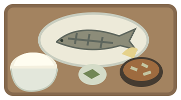

おひるの定食屋
音 ON
本日の定食
焼き魚
ごはん・味噌汁
・ ・

使えない箸
0
膳
長押し → 離す
そっと
力いっぱい
長押しして、割る
ちょうどいい力は、箸が知っている。
割り箸、それだけなのに。
箸にも棒にも
かからない
。
╱ ╱
きれいに割って。
タップしてはじめる
→
長押しして、指を離す。それだけ。
いただきます、の前に。
やっと
食べられる。
犠牲になった割り箸
0
膳
お店への申し訳なさ
0
％
もう一度
↻